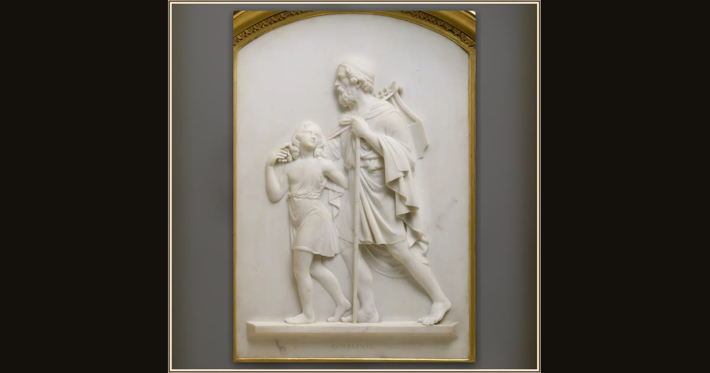

Blind Homer Led by the Genius of Poetry
Edward Sheffield Bartholomew · 1851 · met
A marble relief shows blind Homer carrying a lyre over his shoulder while a youthful figure, the Genius of Poetry, guides him; Aristotle singles out Homer's epic art (24) Explore its place in Aristotle's Poetics, Poetics, section 24.